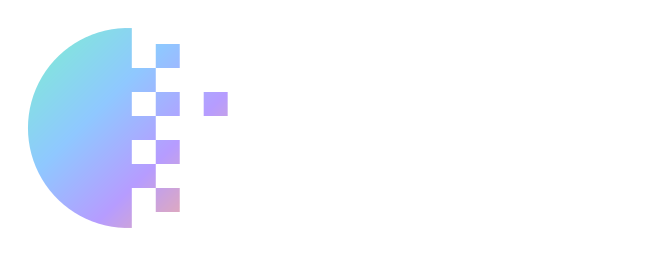
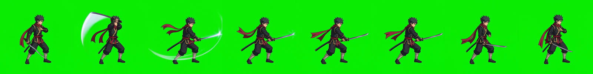
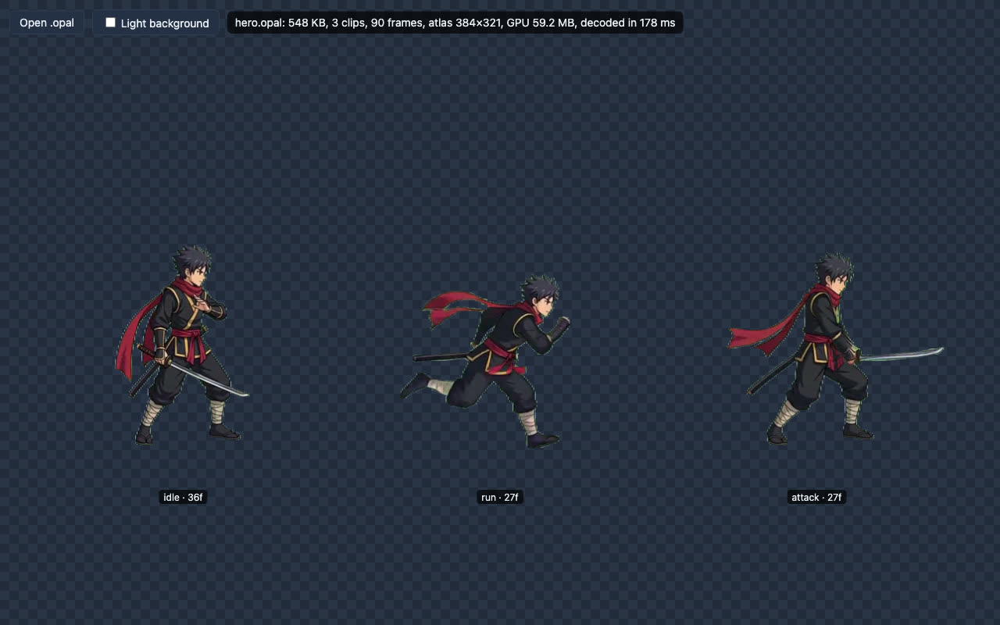
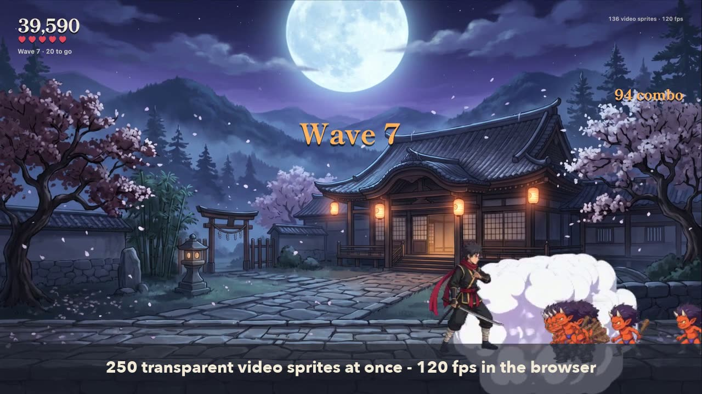

Transparent video sprites for web games. Turn green-screen or alpha video into tiny .opal files, and play thousands of them at once with a ~15 KB runtime.
Play Opal Dojo
A small brawler where every character and effect is an AI-generated video sprite.

How the game was made
Step by step: fal generation, pinned loops, QA, encoding, code.

Opal Studio
Crop, key, preview and export .opal in the browser.

Watch the trailer
35 seconds, with captions, recorded from the game.
- Player: drop in any .opal file to play it
- Benchmark: Opal against <video> elements
- Keying preview: green, magenta and two-tone backdrops